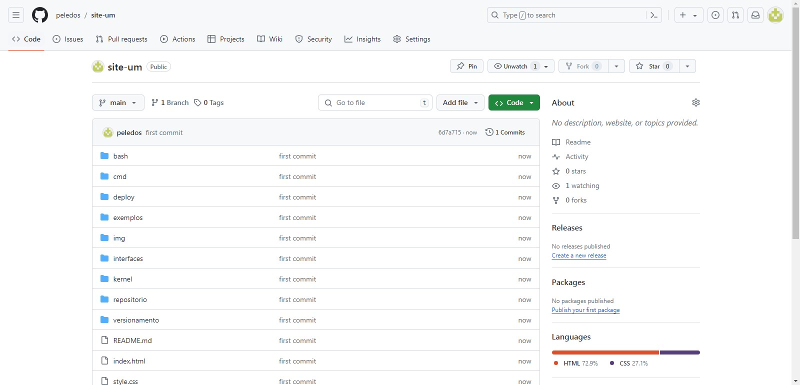

Repositório
O que é?
Um repositório do Git é um armazenamento virtual para projetos. Ele permite que você salve versões do código, que você pode acessar quando precisar.
Exemplo de Versionamento

Um repositório do Git é um armazenamento virtual para projetos. Ele permite que você salve versões do código, que você pode acessar quando precisar.